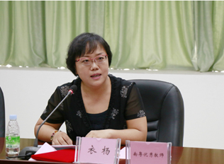

{% extends 'part/base.html' %}

{% block head %}
  <link href="/static/css/team.css" rel="stylesheet">
  <script type="text/javascript" src='/static/js/team.js'></script>
{% endblock %}

 
{% block title %}关于项目{% endblock %}

{% block content %}
    {%  include 'part/header.html' %}
    <div id='container'>
      <div id='container_left'>
        <div class='left_nav nav1'>
          <div class='nav_head'>
            <div class='icon'></div>
            <a class='nav_head_title' class='nav_li' href="/team/{{mainTeam.id}}/">主要负责团队</a>
          </div>
          <div class='nav_body'>
            {% for member in mainTeam.belong_team.all %}
            <div class='nav_li'><a href="/member/{{member.id}}/">{{member.name}}</a></div>
            {% endfor %}
            <!-- <div class='nav_li' id='nav_li0'>衣扬副教授</div>
            <div class='nav_li' id='nav_li1'>陈铭津</div>
            <div class='nav_li' id='nav_li2'>陈福华</div>
            <div class='nav_li' id='nav_li3'>陈雅雪</div>
            <div class='nav_li' id='nav_li4'>孔方圆</div>
            <div class='nav_li' id='nav_li5'>陈纪云</div> -->
          </div>
        </div>
        <!-- <div class='left_nav nav2'>
          <div class='nav_head'>
            <div class='icon'></div>
            <div class='nav_head_title'>参与团队</div>
          </div>
          <div class='nav_body'>
            <div class='nav_li'>团队A</div>
            <ul>
              <li class='nav_li' id='nav_li6'>成员1</li>
              <li class='nav_li' id='nav_li7'>成员2</li>
              <li class='nav_li' id='nav_li8'>成员3</li>
              <li class='nav_li' id='nav_li9'>成员4</li>
            </ul>
            <div class='nav_li'>团队B</div>
              <ul>
                <li class='nav_li' id='nav_li10'>成员1</li>
                <li class='nav_li' id='nav_li11'>成员2</li>
                <li class='nav_li' id='nav_li12'>成员3</li>
                <li class='nav_li' id='nav_li13'>成员4</li>
              </ul>
          </div>
        </div>-->
      </div>
      <div id='container_right'>
        {% if team %}
        <div class='container_right'>
          <div class='part'>
            <!-- <div class='part_title'>团队简介</div>
            <div class='part_content'>
              <p> 2016年8月13-14日，由我院吴忠道教授牵头主持的2016年国家重点研发计划项目启动会在我校学人馆顺利召开。中山大学副校长颜光美教授、中山大学科学研究院副院长陶亮教授、范瑞泉副处长出席了开幕式，颜光美副校长在开幕式上致欢迎词。中国科学院院士赵国屏教授、“973”项目首席余新炳教授等9位专家应邀出席会议进行指导。项目组成员共60余人出席了会议。 </p>
              
            </div> -->
            {{currentTeam.introduction|safe}}
          </div>
          <!-- <div class='part'>
            <div class='part_title'>研究方向</div>
            <div class='part_content'>
              <p>医学媒介生物及其相关病原体的入侵可引起如登革热、寨卡病毒病、疟疾、锥虫病、血吸虫病、广州管圆线虫病等重要热带病的流行、疫情暴发与扩散，甚至成为重大公共卫生安全事件，会对人类健康和社会稳定构成极大威胁。</p>
              <p>“重要热带病传播相关的入侵媒介生物及其病原体的生物学特性研究”(编号2016YFC1200500)以我国重要医学媒介生物及其相关病原体-入侵螺类（福寿螺和褐云玛瑙螺、藁杆双脐螺）、入侵伊蚊（埃及伊蚊和白纹伊蚊）、输入性病原体（疟原虫、锥虫和血吸虫）等为研究对象，开展热带病传播相关的入侵媒介及相关病原体的生物学特性研究，主要研究内容包括：入侵媒介及相关病原的入侵致害相关生物学特性研究、入侵媒介的生态适应性及进化研究、入侵媒介及相关病原的种质遗传学特征和生态适应性分子基础、入侵媒介和病原体/病原体与宿主(媒介)相互作用的分子机制研究。</p>
            </div>
          </div>
          <div class='part'>
            <div class='part_title'>课题任务</div>
            <div class='part_content'>
              <p> 预期将丰富我国重要热带病入侵媒介螺类(福寿螺、褐云玛瑙螺、双脐螺)和伊蚊(埃及伊蚊和白纹伊蚊)入侵、扩散和传病相关的生物学特性, 深化或进一步明确其传播疾病的潜能，获得一批创新性研究成果(包括高水平论文、专著、专利等), 从而为建立媒介生物及其病原体入侵、扩散和传播的快速侦查、风险评估及预警处置体系提供科学依据和技术支撑，进一步提升我国入侵媒介生物领域的研究水平，为有效防控媒介生物侵入对我国人类健康及公共卫生安全的威胁提供技术支撑。随着项目的开展，也将可能筛选到一批有关入侵媒介生物及输入性病原体具有识别意义的分子标志, 或具有防控价值的靶标, 为进一步的开发或转化研究奠定基础。同时，通过项目的实施，也将培养一批青年学术骨干和研究生，形成具有一定国际影响力的研究团队，为我国深入开展入侵生物的防制与相关研究储备人才，进一步提升项目参与单位学科建设水平，完善与侵入生物研究相关技术体系，对保障国家生物安全具有重要的战略意义。</p>
            </div>
          </div> -->
          <div class='part'>
            <div class='part_title'>受本项目支持发表的文章</div>
            <div class='part_content'>
              <ul class="articlelist">
                {% for article in currentTeam.publishArticles.all %}
                <li>
                  <article>
                    <a href="{{article.link}}">{{article.title}}</a>
                  </article>
                </li>
                {% endfor %}
              </ul>
              <!-- <ul class="articlelist">
                <li>
                    <article>
                      <a href="/index.html?p=503" target="_blank">
                        清单：国家重点研发计划2016年度项目公示详细清单（二）                  </a>
                    </article>
                  </li><li>
                    <article>
                      <a href="/index.html?p=504" target="_blank">
                        清单：国家重点研发计划2016年度项目公示详细清单（一）                  </a>
                    </article>
                  </li><li>
                    <article>
                      <a href="/index.html?p=505" target="_blank">
                        重磅：超215亿！国家重点研发计划2016年度项目出炉！                  </a>
                    </article>
                  </li><li>
                    <article>
                      <a href="/index.html?p=536" target="_blank">
                        新公示的国家重点研发计划2016年度项目详细清单                  </a>
                    </article>
                  </li><li>
                    <article>
                      <a href="/index.html?p=537" target="_blank">
                        超276亿！国家重点研发计划40类2016年度项目出炉！                  </a>
                    </article>
                  </li><li>
                    <article>
                      <a href="/index.html?p=586" target="_blank">
                        国家重点研发计划将步入项目实施新阶段                  </a>
                    </article>
                  </li>         
                </ul> -->
            </div>
          </div>
        </div>
        {% endif %}
        {% if member %}
        <div class='container_right'>
          <div class='part'>
            <div class='part_title'>{{currentMember.name}}简介</div>
            {{currentMember.profile|safe}}
          </div>
          <!-- <div class='part'>
            <div class='part_title'>衣扬副教授简介</div>
            <div class='part_content'>
              
              <p>姓名：衣扬</p>
              <p>性别：女</p>
              <p>职称：副教授</p>
              <p>单位：中山大学</p>
              <p>学历：硕士 博士</p>
              <p>博士，副教授，硕士生导师。中国计算机学会教育委员会委员、<br>中国计算机学会高级会员。</p>
            </div>
          </div>
          <div class='part'>
            <div class='part_title'>主持的部分科研项目</div>
            <div class='part_content'>
              <ol>
                <li>广东省产学研项目：基于协同优化和知识管理的定制型离散制造业信息化服务平台及其关键技术研发及应用，2011-2012</li>
                <li>国家自然科学基金项目：基于人工生命计算的计算协同关键问题研究（编号：60573159），2006－2008</li>
                <li>教育部留学基金项目：资源配置与优化研究；2007-2008</li>
                <li>广东省教育厅项目：软件工程专业资源库建设（编号：GDB049），2005-2007</li>
                <li>广东省自然科学基金：敏捷供应链中复杂系统建模与优化及软计算方法的研究（编号：031539）项目，2003－2005</li>
              </ol>
            </div>
          </div>
          <div class='part'>
            <div class='part_title'>获得奖项</div>
            <div class='part_content'>
              <ol>
                <li>2005中山大学教学成果一等奖，名称：本科软件工程实例化教学法，证书编号：2004028；（排名3）</li>
                <li>2006，2008，2010 年度教育部-IBM高校合作项目优秀教师奖获得者</li>
                <li>2006广州市科技进步奖二等奖，名称：可重构企业资源计划系统；证书编号：2005-电-2-04-R04，颁发单位：广州市人民政府</li>
                <li>2008广东省科学进步三等奖：天剑可重构企业资源计划系统，证书编号：B07-0-3-03-R04，广东省人民政府</li>
                <li>2008中山大学教学成果一等奖，名称：全方位实践驱动的创新型IT人才培养模式；（排名3）</li>
                <li>2009年广东省教学成果一等奖；全方位实践取得的创新行IT人次培养模式（排名3）</li>
                <li>2009年留学基金委：IBM奖教金获奖者</li>
              </ol>
            </div> -->
          </div>
        {% endif %}

        </div>
      </div>
    </div>
{% endblock %}